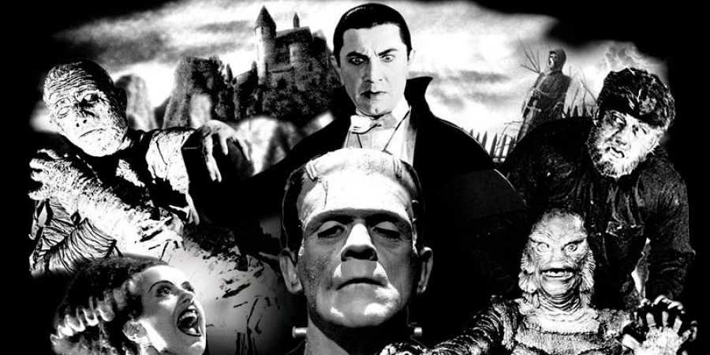

El cine de terror es un género cinematográfico que se caracteriza por su voluntad de provocar en el espectador sensaciones de pavor, terror, miedo, disgusto, repugnancia, horror, incomodidad o preocupación. Sus argumentos frecuentemente desarrollan la súbita intrusión en un ámbito de alguna fuerza, evento o personaje de naturaleza maligna o celestial, a menudo de origen criminal o sobrenatural. En los cines de terror es donde se produce una sensación de miedo o temor sobre las distintas causas que genera un determinado personaje o actor no profesional.
Los antecedentes del cine de terror provienen de, como hemos dicho en la introducción, la novela de terror. Además de estas novelas que nacieron en la segunda mitad del siglo XVIII, anteriormente ya había una tradición por los cuentos de miedo pasados de generación en generación. Una tradición muy desarrollada en las culturas rurales de todo el mundo. Si nos ceñimos a lo estrictamente cinematográfico, se puede decir que la primera película de la historia fue también una película de terror. Estamos hablando del film de los hermanos Lumière, L’arrivée d’un train à La Ciotat (La llegada del tren a la estación de Ciotat) de 1896. Esta película causó gran terror en los espectadores, el cine era un invento nuevo y al ver el tren que se acercaba, el público creyó que se iba a salir de la pantalla para arrollarlos. Se puede decir que, entonces, el cine está ligado al terror desde sus inicios. Ya que, aunque sea un mínimo, damos al cine más verosimilitud que a los libros. A diferencia de la literatura que sugiere, el cine “muestra” y hereda ese poder icónico e indicial surgido anteriormente con la fotografía. Casi paralelamente a los Lumière, sería Georges Méliès quien explorará también el cine de terror en su película «Le manoir du Diable» La mansión del diablo (1896), un film de tres minutos donde un diablo acosa a los visitantes. Aunque generaban bastante miedo al público de esa época, todas estas películas eran comedias y han sido calificadas por comedias de terror por los historiadores del cine. Por lo tanto, podemos decir que la primera película de terror fue La mansión del diablo (1896), de Georges Méliès. Visto el éxito de esta película, Meliès siguió experimentando con las películas de miedo con Une nuit terrible (1896), que cuenta la historia de un hombre que termina luchando contra una araña gigante o L’auberge ensorcelée (1897), la historia de un huésped de un hotel que es atormentado por una presencia invisible. También en Francia tenemos la primera adaptación al cine de Nuestra Señora de París, la famosa novela de Victor Hugo, llamada de Esmeralda (1905) de Alice Guy.
Tipos de cine de terror